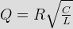

- When resonant frequency for an R-L-C parallel circuit is given by ½π &radiac;(LC), the essential condition is that
The essential conditions are for resonant of parallel R-L-C circuits –
1. Power factor is unity.
2. Current at resonance is [V / (L / CR)] and is in phase with the applied voltage & also the value of current is minimum.
3. Susceptance part must be zero, i.e. inductance is non resistive is minimum. - An RLC circuit has f1 and f2 as the half power frequency and f0 as tthe resonant frequency. The Q factor of the circuit is given by
Q factor of a resonating circuit is defined by the ratio of frequency of resonance to the bandwidth of the circuit.
Here bandwidth = f1 – f2. - An electronic test circuit produced a resonant curve of half power frequency points at 414 Hz and 436 Hz. If Q factor be 10, the resonant frequency of the circuit is
Resonant frequency = Q factor × Bandwith.
- A series RLC circuit, excite by a 100 V variable frequency source has a resistance of 10Ω and an inductive reactance of 50Ω at 100 Hz. If the resonance frequency is 500 Hz, what is the voltage across the inductor at resonance ?
At resonance, impedance Z = R = 10 ohms.
So current at resonance I = V/Z = 100/10 = 10 Volts
XL = 50 ohms at 100 Hz
So, L = 1/4 π
At resonance, XL = 1/4 π ×
2π × 500 = 250 ohms.
Hence voltage across the inductor at resonance = I.XL
= 10 × 250 = 2500 volts. - In a simple RC high pass filter the desired roll-off frequency is 15 Hz & C = 10&mm; F. The value of R would be
For high pass RC filter
2Π fC = 1 / RC where fC is roll off frequency. - The quantity (12 + j9) represents the resistive and reactive components of current drawn by an ac circuit. The phase angle between the applied voltage and current is
Here current I = 12 + J9
So phase angle φ = tan–1
(9 / 12) = 36.87 °. - For the RLC parallel resonant circuit when R = 8K Ω L = 80 mH and C = 0.50 μ F; the quality fact is
For parallel RLC resonant circuity,
. - In series as well as parallel resonant circuit, increase in resistance would cause
Bandwidth is proportional to the value of resistance.
- A parallel resonant circuit can be employed
The equivalent impedance of parallel resonating circuit is L / CR at resonance. Normally R being less, this impedance is very high at resonance & then the current is much lower in the parallel circuit. So the circuit rejects the small band of frequencies.
- An engineer needs to make an RC high pass filter. He has one 100 PF capacitor, one 300 PF capacitor, one 18 KΩ resistor and one 33 KΩ resistor available. The greatest cut off frequency possible is
If cut off frequency be fC then for RC high pass filter,
2π fC = 1 / RC
For greatest cut off frequency,
R = (33 × 18) / (33 + 18)
C = (100 × 300) / (100 + 300). - When a sinusoidal voltage is applied across R-L series circuit having
R = XL, the phase angle will beFor R-L series circuit the phase angle
Φ = ∠ – tan – 1 (X L / R). - A 20 mH inductor carries a sinusoidal current of 1 A rms at a frequency of 50 Hz. The average power dissipated by the inductor is
Average power of pure inductive or capacitor circuit is zero.
- For an ac circuit, if u(t) = 160 sin (Ω t+ 10°) and
i(t) = 5sin(Ω - 20 °); then reactive power absorbed by the circuit isVrms = 160 / &radiac; 2
Irms = 5 / &radiac; Z
φ = phase angle = 10° – (– 20°)
= 30 °
Reactive power = VrmsI rms sin φ. - The power factor of an ac circuit lies between
Power factor of an ac circuit can be defined as the cosine value of phase angle between voltage and current.
Since the cosine value of any angle between 0° to 90° lies between 0 and 1. - In a series RLC circuit current will lag the voltage if
Phase angle of RLC circuit between voltage & current is

Current I lags the voltage if XL > XC. - The active power drawn by a pure capacitor is
Active power P = VI cos &theata;
In case of purely capacitive circuit, current lead the voltage by an angle of 90°
Hence power factor cos&theata; = cos90 = 0. - An AC power source will supply maximum power to a load when
Let ZS = RS + JXS
ZL = RL + JXL
From maximum power transfer theorem we get
RL = RS
and XL = –XS
So, ZL = RL + JXL = RS
–JXS = ZS *. - In parallel RLC circuit current will lead the voltage if
In case of parallel RLC circuit, the phase angle between voltage & current be
 [/math\") where B L & BC are inductive and capacitive susceptance current I leads the voltage when B L
where B L & BC are inductive and capacitive susceptance current I leads the voltage when B L - A two terminal black box contains a series combination of a resistor and unknown two terminal linear device. As soon as the battery is connected to the black box the current is found to be zero. The device is
XL 2Π f. L. Here f = 0, so XL = 0. As the source is dc source, so an inductor can not pass direct current.
- A series tuned antenna circuit consist of a variable capacitor (50 PF to 360 PF) and a 260 μ H antenna coil which has a DC resistance of 12Ω The frequency range of radio signal to which the radio is tunable is
[math] f_0 = \frac {1} {2 \ pi \ sqrt {LC}} ' style='vertical-align:1%' class='tex' alt='\theata = tan ^{-1} \left (\frac {B_L – B_C} {G} \ right) [/math\ where B L & BC are inductive and capacitive susceptance current I leads the voltage when B L
- A two terminal black box contains a series combination of a resistor and unknown two terminal linear device. As soon as the battery is connected to the black box the current is found to be zero. The device is
XL 2Π f. L. Here f = 0, so XL = 0. As the source is dc source, so an inductor can not pass direct current.
- A series tuned antenna circuit consist of a variable capacitor (50 PF to 360 PF) and a 260 μ H antenna coil which has a DC resistance of 12Ω The frequency range of radio signal to which the radio is tunable is
[math] f_0 = \frac {1} {2 \ pi \ sqrt {LC}} ' />.
Design with  by SARU TECH
by SARU TECH
www.sarutech.com
Content Credited to electrical4u.com
Online Electrical Engineering Study Site